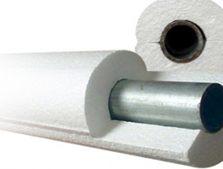

Venta y Administración:
Florida 274, 2º - (1005)
Buenos Aires - Argentina -
Tel: (54-11) 4326-0062 y líneas rotativas -
Fax: (54-11) 4326-3240
Florida 274, 2º - (1005)
Buenos Aires - Argentina -
Tel: (54-11) 4326-0062 y líneas rotativas -
Fax: (54-11) 4326-3240
Fábrica:
Ruta 7 - Km. 70 - (6700)
Luján - Buenos Aires - Argentina -
Tel: (02323) 420422 / 204347
e-mail: inca@incaaislaciones.com.ar
Ruta 7 - Km. 70 - (6700)
Luján - Buenos Aires - Argentina -
Tel: (02323) 420422 / 204347
e-mail: inca@incaaislaciones.com.ar
Poliestireno
. Ladrillo para losa
. Placas
. Bloques
. 1/2 caña
. Inca panel
. Núcleo EPS
. Núcleo PUR
. Núcleo LANA
. Ladrillo para losa
. Placas
. Bloques
. 1/2 caña
. Inca panel
. Núcleo EPS
. Núcleo PUR
. Núcleo LANA
1/2 caña poliestireno
Poliestireno expandido para aislación de cañerías frigoríficas, conductos de agua, aire hasta 70 º C evitando las perdidas de calor y frío
Poliestireno expandido para aislación de cañerías frigoríficas, conductos de agua, aire hasta 70 º C evitando las perdidas de calor y frío
Presentación:
. Diametro:
25/38/50/63/75/100 mm
(Descargar folleo)
. Diametro:
25/38/50/63/75/100 mm
(Descargar folleo)
